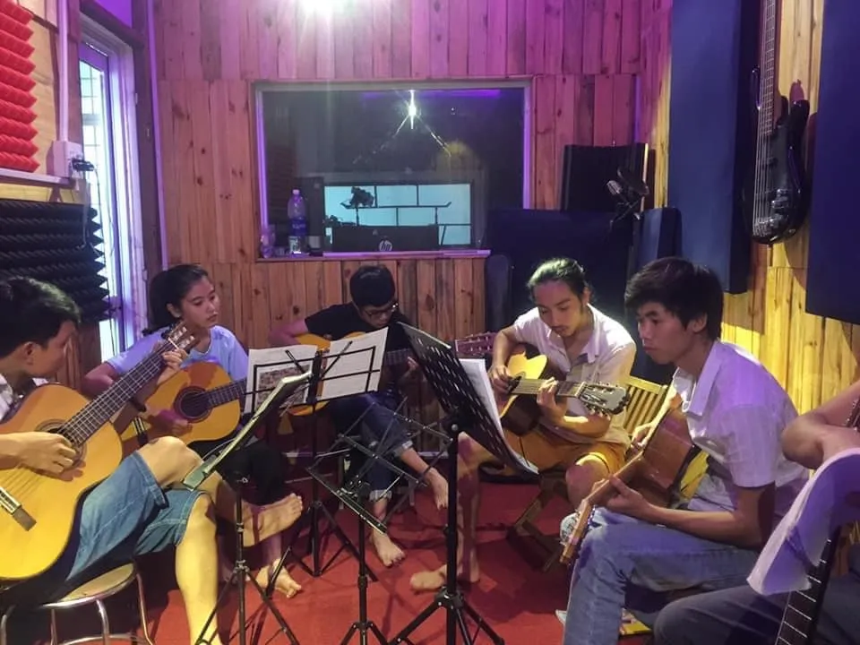

Mùa hè đến, các con được nghỉ học nhưng cha mẹ lại bắt đầu lo lắng: con ở nhà cả ngày, không biết làm gì ngoài dán mắt vào điện thoại hay máy tính bảng. Đây là tình trạng rất phổ biến hiện nay — và học đàn guitar chính là một trong những giải pháp hiệu quả nhất để thay đổi điều đó.
1. Tại sao mùa hè là thời điểm lý tưởng để bắt đầu học đàn?
Kỳ nghỉ hè thường kéo dài từ 2 đến 3 tháng. Đây là khoảng thời gian hoàn toàn trống trải, không bị áp lực bởi bài vở trên trường học. Lượng thời gian này cực kì lý tưởng và vừa vặn để một đứa trẻ bắt đầu làm quen với nhạc cụ, học được những hợp âm cơ bản đầu tiên và chơi được một bài nhạc hoàn chỉnh.
Hơn nữa, khi có lịch học guitar cố định hàng tuần, trẻ sẽ tự động hình thành một thói quen sinh hoạt đều đặn hơn thay vì thức khuya và ngủ dậy muộn vào ngày hè. Tại Nhật Trần Guitar, từ những ngày đầu hè, các lớp học đàn guitar luôn rộn ràng tiếng cười. Rất nhiều phụ huynh cho biết, chỉ sau 4–6 tuần, con đã tự ôm đàn gảy được những giai điệu đơn giản, biết trân trọng cây đàn của mình và hạn chế hẳn việc đụng vào điện thoại di động.
2. Học đàn guitar mang lại lợi ích thực sự gì cho trẻ?
Không chỉ là phương pháp cai nghiện thiết bị điện tử, âm nhạc từ tiếng đàn guitar mang lại giá trị cốt lõi như một hành trang vững chắc cho sự phát triển của trẻ em:
- Rèn luyện sự kiên nhẫn và kỷ luật: Để bấm đúng hợp âm và tạo ra âm thanh trong trẻo, trẻ cần luyện đi luyện lại không ít lần. Chút đau ở đầu ngón tay không làm trẻ lùi bước mà chính là bài học tuyệt vời về lòng kiên trì.
- Kích thích tư duy sáng tạo: Âm nhạc là một ngôn ngữ biểu cảm mạnh mẽ. Bằng cách nối những nốt nhạc lại với nhau, trẻ học cách bộc lộ cảm xúc một cách đầy tự do, nhẹ nhàng và tích cực.
- Tăng cường sự tự tin: Khoảnh khắc lần đầu tiên tự tin ôm đàn ngân nga một bài hát yêu thích trước mặt bố mẹ, cảm giác tự hào và thành tựu sẽ nâng cánh cho con mạnh dạn thử thách với những bài tập cao hơn.
- Phát triển kỹ năng giao tiếp cộng đồng: Các lóp học nhạc là không gian kết nối tuyệt vời. Trẻ thường hòa đồng, dễ kết bạn mới và bớt rụt rè hơn ở các hoạt động đội nhóm hay sân khấu ngoại khóa ở trường.
Một đứa trẻ ôm cây đàn không chỉ học những nốt nhạc — con đang học cách kiên trì vượt qua khó khăn, học cách chấp nhận các nốt trầm trong cảm xúc và tìm thấy niềm kiêu hãnh của chính bản thân.
3. Nên cho con bắt đầu với đàn guitar loại nào?
Việc mua ngay một cây đàn không phù hợp có thể vô tình bóp chết đi niềm đam mê mới chớm nở của trẻ. Với độ tuổi nhỏ (dưới 10 tuổi), guitar classic (đàn dây nylon) là chân ái được tất cả giáo viên khuyên dùng. Sợi dây nylon mềm giúp bé hạn chế tối đa việc đau ngón tay. Bề mặt cần đàn cũng bằng phẳng và rộng bản, giúp bé dễ dàng tìm vị trí phím mà không phải vòng tay quá rướn.
Trong khi đó, nếu bé nhà bạn đã lớn (trên 10 tuổi) và có thiên hướng thích những dòng nhạc trẻ sôi động, ngân vang, bạn hoàn toàn có thể mua một cây guitar acoustic. Quan trọng nhất không phải là chủng loại, mà là kích thước đàn. Phụ huynh nên ưu tiên mua đàn size nhỏ cho trẻ như size 1/2 hoặc 3/4. Một cây đàn full-size người lớn sẽ khiến bé dễ chùn tay vì cần đàn quá to so với vóc dáng của mình.

4. Nên học qua Youtube hay đến lớp cùng giáo viên?
Youtube hay mạng xã hội quả nhiên là kho tàng kiến thức khổng lồ. Tuy nhiên, với mục đích làm quen nhạc cụ, việc tìm kiếm giáo viên dạy đàn uy tín là một sự đầu tư hoàn toàn xứng đáng. Những lỗi sai tư thế ngón tay, cách ngồi ép mình vào đàn hay gồng cứng cổ tay... nếu không được nắn chỉnh ngay từ đầu sẽ trở thành tật xấu cực kỳ khó sửa.
Giáo viên, với sự tương tác trực tiếp, sẽ biết cách xây dựng một bộ giáo trình mang tính thực hành cao. Bài tập không đơn thuần là thuộc nốt, mà được linh hoạt như một trò chơi giải trí đầy say mê, vừa có sự thúc đẩy lại vừa giữ được sự hứng thú dài lâu.
Kết luận
Kỳ nghỉ hè là món quà vô giá của trẻ thơ. Thay vì lo lắng chuyện con dùng điện thoại quá nhiều, hãy chủ động biến mùa hè năm nay thành bước đệm hoàn hảo để con khám phá sở thích mới đầy ý nghĩa. Cửa hàng Nhật Trần Guitar luôn có đội ngũ thợ lành nghề để giúp bạn chọn mua đàn giá tốt và các giáo viên tận tâm dìu dắt lứa tuổi thiếu nhi. Đừng chần chừ, hãy liên hệ ngay với chúng tôi để bắt đầu một mùa hè ngập tràn âm nhạc!
Thu Hương 2 ngày trước
Bài viết rất hay! Mình đang tính cho con gái 8 tuổi học guitar hè này. Bé nhà mình hay dùng iPad lắm nên rất cần một hoạt động thay thế. Cảm ơn anh/chị!
Nhật Trần Guitar Tác Giả 2 ngày trước
Chào chị Thu Hương! Bé 8 tuổi rất phù hợp để bắt đầu với guitar classic size 1/2. Chị có thể inbox hoặc gọi cho cửa hàng để được tư vấn lớp học thiếu nhi nhé!